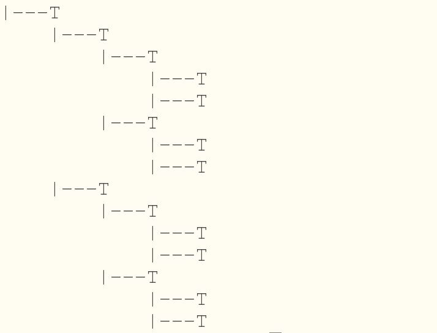

递归在软件编程中被广泛使用，有时候采用递归会使程序编写简化并能完美的体现设计思想或处理流程。需要注意的是，某些场景虽然可以使用递归解决，但并不合适。
如何解释递归：要理解递归你要先理解递归。
递归是函数调用自身的情况，在某些场景下，递归可以轻松解决复杂的问题。编写递归函数一定要有一个或多个终止条件。
递归调用：f(n) -> f(n-1) .......-> f(0)
函数返回：f(0) -> f(1) ...... -> f(n)
通常的示例总会去求解斐波那契数列、1~n的和、阶乘...，尽管可以解决问题，但是这种示例其实并不好，属于对递归的滥用。这几个示例的解法简单，不再以代码演示。
一个简单的原则是：如果递归能清晰描述运行原理，并且系统资源占用在合理范围内，则可以使用递归。如何把握需要根据业务场景，硬件资源等因素确定。
这里给出的示例是实现整数快速排序的递归实现，并且采用C语言实现。你在接触这部分内容时应该已经学过快速排序算法。我们会在这一部分实现快速排序并在后面实现ls命令的时候使用。快速排序在数据量很大的时候算法性能非常好，平均情况来看，其函数递归深度仍然能够控制在比较低的范围内。
快速排序的思想简洁优雅，但实现起来，还是有一些需要仔细考虑的地方。一个是枢纽元（另一种翻译为主元）的选取，另一个根据枢纽元对数据分区的方式。以下代码是一个快速排序的实现，实现方式在选区枢纽元的时候采用了中间位置取值，并把此值和start位置数据交换。之后从start+1开始和d[start]比较，并使用i记录分组位置。代码在交换数据的时候没有使用函数，而是使用宏定义展开。
x13void qsorti(int *d, int start, int end) {4 if (start >= end) {5 return ;6 }7 int med = (end+start)/2; //选择枢纽元位置8 int i = start;9 int j = end;10 int tmp = 0;11 12 SWAP(d[med],d[start]); //把枢纽元和第一个元素交换位置13 14 for(j=start+1;j<=end;j++) {15 /*16 每个元素和枢纽元比较，如果小于枢纽元则先进行i++，然后17 交换d[j]和d[i]。18 i的作用很关键，记录位置，从start开始，通过交换位置19 把数据按大小分类。20 数据分类的巧妙之处在于，j从i+1的位置开始，i和j都会向后移动，21 j肯定是>=i，如果d[j]<d[start]，d[i]一定是 >= d[start]，22 因为如果不是，在此之前，j已经走过i的位置，已经发生了数据交换。23 在执行SWAP(d[i], d[j])之后，d[i]以及之前的数据都是小于d[start]。24 */25 if (d[j]<d[start]) { 26 i++;27 SWAP(d[i],d[j]);28 }29 }30 //for循环结束，d[i]一定是 <= d[start]，所以交换它们的位置31 SWAP(d[i],d[start]);32 33 qsorti(d, start, i-1);34 qsorti(d, i+1,end);35}对于数字进行快速排序，大小直接进行比较即可，对于字符串的比较，需要使用字符串比较函数，这样之前的程序要做以下修改：
实现代码如下：
xxxxxxxxxx2413void qsortstr(char *d[], int start, int end) {4 if (start >= end) {5 return ;6 }7 int med = (end+start)/2;8 int i = start;9 int j = end;10 char *tmp = NULL;11 12 SWAP(d[med],d[start]);1314 for(j=start+1;j<=end;j++) {15 if (strcmp(d[j],d[start]) < 0) {16 i++;17 SWAP(d[i],d[j]);18 }19 }20 21 SWAP(d[i],d[start]);22 qsortstr(d, start, i-1);23 qsortstr(d, i+1,end);24}
现在来使用递归输出以下树形结构：

xxxxxxxxxx2315void out_tree(int deep, int move) {6 if (deep <= 0)return;78 char fmt_str[16] = {'\0'};910 sprintf(fmt_str, "%%-%ds", move);11 printf(fmt_str,"");12 printf("|---T\n");13 14 out_tree(deep-1, move+4);15 out_tree(deep-1, move+4);16}1718int main(int argc, char *argv[]) {1920 out_tree(4, 0);2122 return 0;23}使用递归的方式可以输出目录树结构。
在上一章是实现了mkdir命令。Linux自带的mkdir命令还有一个功能：如果父级目录不存在则自动创建。通过man mkdir查看命令手册发现-p选项开启此功能。如果在$HOME/tmp目录下创建linux/ubuntu目录。但是linux/和ubuntu/都不存在。自动创建linux目录，并且在linux/目录创建ubuntu。这个功能该如何实现。
考虑更复杂的情况：a/b/c/d/e。这种层级如果每个目录都不存在程序如何自动创建？
考虑到这章的主题，肯定是要使用递归实现的。现在考虑如何实现：
如果从某一级目录开始不存在，则其子目录肯定都不存在，所以要从此一级目录开始创建，并一级一级的创建子目录。而要确定哪一层级的目录不存在，可以从路径字符串尾部开始向前递减，直到/字符截止，然后查看目录是否存在，直到到达字符串开头或一个存在的路径。
字符串"a/b/c/d/e"，从最后开始向前递减，如果发现/a/b路径是存在的，则从此a/b/c开始创建。
递归处理的流程是：从字符串尾部开始，递减判断字符是否是'/'，找到'/'然后把它设置成'\0'，之后检测如果目录不存在则进行递归调用，递归调用结束，恢复之前'\0'为'/'，继续当前的目录创建过程，本例程使用了access检测目录是否存在：access(path, F_OK)，成功返回0，否则返回-1。
以下是完整的mkdir实现：
xxxxxxxxxx18018101217char _args[ARGS_END] = {'\0'};1819int *_dir_ind = NULL;2021void help(void)22{23 char *help_info[] = {24 "创建目录，支持参数--help，--mode\n",25 "--help：输出帮助信息\n",26 "--mode=[MODE]：设定创建目录的权限，MODE应该是一个三位的数字，",27 "否则程序会报错，数字是0-7的范围。比如，754表示rwxr-xr--。\n",28 "-p 如果父级目录不存在则创建。\n",29 "示例：\n",30 " mkdir --mode=755 a/ b/ c/\n",31 " mkdir study/\n",32 " mkdir --help",33 "\n",34 "\0"35 };36 int i=0;37 while (strcmp(help_info[i],"\0")!=0) {38 printf("%s",help_info[i++]);39 }40}4142int try_make_parent(char *path, int mode);4344int recur_make_parent(char *path, int mode);4546void clean_exit(int err) {47 if (_dir_ind) {48 free(_dir_ind);49 }5051 exit(err);52}5354int main(int argc, char *argv[])55{56 if (argc<2) {57 dprintf(2,"Error:less DIR_NAME\n");58 return -1;59 }6061 int mode_flag = 0;62 int mode = 0755;63 int i;64 int mode_buf = 0;65 char tmp;66 int dir_count = 0;6768 _dir_ind = (int*)malloc(sizeof(int)*(argc-1));69 if(_dir_ind == NULL) {70 perror("malloc");71 return MK_ERR_MALM;72 }7374 for(int i=0; i<argc-1; i++)75 _dir_ind[i] = 0;7677 for(i=1;i<argc;i++) {78 if (strcmp(argv[i],"--help")==0) {79 help();80 clean_exit(0);81 } else if (strncmp(argv[i],"--mode=",7)==0) {82 if (mode_flag > 0) {83 dprintf(2,"Error: too many --mode\n");84 clean_exit(MK_ERR_ARGS);85 }8687 if (strlen(argv[i]+7)!=3) {88 dprintf(2, "Error: mode is wrong\n");89 clean_exit(MK_ERR_ARGS);90 }9192 for (int k=0;k<3;k++) {93 tmp = argv[i][7+k];94 if (tmp < '0' || tmp > '7') {95 dprintf(2, "Error: mode number must in [0,7]\n");96 clean_exit(MK_ERR_ARGS);97 }98 mode_buf += (tmp-48)*(1<<(3*(2-k)));99 }100101 mode_flag = i;102 } else if (strcmp(argv[i], "-p") == 0) {103 _args[ARGS_MKPARENT] = 1;104 } else {105 _dir_ind[i-1] = 1;106 dir_count ++;107 }108 }109110 if (dir_count == 0) {111 dprintf(2,"Error: less DIR_NAME\n");112 clean_exit(MK_ERR_ARGS);113 }114115 if (mode_flag>0 && mode_buf > 0)116 mode = mode_buf;117118 for (i=1;i<argc;i++) {119 120 if (_dir_ind[i-1]==0)continue;121122 if (mkdir(argv[i],mode) < 0) {123 if (_args[ARGS_MKPARENT]) {124 if (try_make_parent(argv[i], mode) < 0) {125 clean_exit(MK_ERR_FAIL);126 }127 } else {128 perror("mkdir");129 return -1;130 }131 }132 }133134 free(_dir_ind);135 _dir_ind = NULL;136137 return 0;138}139140/*141 创建父级目录，实际是调用recur_make_parent函数，此函数先把路径进行预处理，142 去掉目录最后的'/'，否则最后的'/'会影响目录的创建。143*/144int try_make_parent(char *path, int mode) {145 int plen = strlen(path);146 if (plen > 0 && path[plen-1]=='/')147 path[plen-1] = '\0';148149 return recur_make_parent(path, mode);150}151152int recur_make_parent(char *path, int mode) {153 154 int plen = strlen(path);155 if(plen<=0 || access(path, F_OK)==0)156 return 0;157158 int i = plen-1;159 while(i>0 && path[i]!='/')i--;160 if (i == 0)161 goto start_mkdir; //如果到达字符串开头，则跳转到创建目录的操作162163 //只有i大于0，说明是path[i] == '/'，把此处作为字符串结尾164 path[i] = '\0';165166 if (access(path, F_OK) < 0)167 if(recur_make_parent(path, mode) < 0) //递归调用168 return -1;169170 path[i] = '/'; //递归完成操作以后恢复数值171172 start_mkdir:;173 if (mkdir(path, mode) < 0) {174 dprintf(2, "%s:\n", path);175 perror("mkdir");176 return -1;177 }178179 return 0;180}
函数递归调用实际上是系统在内存的栈空间不断调用函数，所以使用栈结构保存相应的数据就可以不使用递归。当然消除递归并非只能用栈结构，实现递归读取目录采用的是链表结构，我们在后面的开发过程中会进行实际的操作。
泛型快速排序需要比较好的C编程功底，实现泛排序，可以对任何类型进行快速排序，但是排序驱动函数编写比较麻烦。
现在我们来考虑如何让快速排序支持任何数据类型？支持任何数据类型就是要支持泛型。C语言提供了void类型，void是无类型或者说空类型。这个关键字很少被人关注，但是要实现泛型操作就要用到void*，void是无类型，那它就可以是任何类型。void*指向一块内存地址，怎么解释这块地址的数据，根据具体场景而定。
于是我们使用void*指向任何类型的数据，在实际操作时再进行强制类型转换。这样在比较时，就要提供一个用于比较的回调函数，传递两个参数用a，b表示。返回值有三种：大于0、等于0、小于0，分别表示： a>b，a=b，a<b。
xxxxxxxxxx4213void qsort_core(void * base, int start, int end,4 unsigned int size, int (*comp)(const void *, const void *)5) {6 if (start >= end) {7 return ;8 }9 10 int med = (end+start)/2;11 int k = start;12 int j;13 char tmp;14 char * b = base;1516 for (int i=0;i<size;i++) {17 SWAP(b[med*size+i],b[start*size+i]);18 }1920 for(j=start+1;j<=end;j++) {21 if (comp(b+j*size,b+start*size) < 0) {22 k += 1;23 for(int i=0;i<size;i++) {24 SWAP(b[k*size+i],b[j*size+i]);25 }26 }27 }2829 for (int i=0; i<size; i++) {30 SWAP(b[k*size+i],b[start*size+i]);31 }3233 qsort_core(base, start, k-1, size, comp);34 qsort_core(base, k+1, end, size, comp);35}3637void vqsort(void* base, unsigned int nmemb, unsigned int size, 38 int(*comp)( const void *, const void *)39) {40 qsort_core(base, 0, nmemb/size - 1, size, comp);41}42
通过man 3 qsort查看文档发现：
xxxxxxxxxx171QSORT(3) Linux Programmer's Manual QSORT(3)23NAME4 qsort, qsort_r - sort an array56SYNOPSIS7 89 void qsort(void *base, size_t nmemb, size_t size,10 int (*compar)(const void *, const void *));1112 ......1314 Feature Test Macro Requirements for glibc (see feature_test_macros(7)):1516 qsort_r(): _GNU_SOURCE17 ......系统提供的快速排序库函数和我们设计的非常相似，因为基本的逻辑是一致的。
这里有一个关键的问题是，用于回调的排序驱动函数如何编写。如果编写有误，会导致排序出错，尤其对指针的操作很容易出现段错误。
比如对于字符串的排序，实际交换的是字符串的指针地址。所以传递的是一个二级指针，要进行强制类型转换，对于链表等其他更复杂的结构，也是如此。
字符串比较的回调函数：
xxxxxxxxxx31int str_comp(void *a, void *b) {2 return strcmp(*(char**)a, *(char**)b);3}
以下内容是PHP方向相关的扩展内容，有兴趣的同学可以看看。
此问题是2015级PHP方向的学生在新浪面试中被问到的问题。当时要求学生不使用PHP的JSON扩展，仅使用PHP的类型处理，文本处理等语言基础功能实现。实现此功能是一个递归的经典案例。
你可能看完PHP语法的基础介绍以及JSON的说明仍然无法理解，可以配合PHP参考手册了解更多语法，如果你对JSON以及使用有足够的了解，就能够很容易看明白。
在讲解此问题之前，简单提一下PHP语法：
PHP的变量要使用$，定义变量：$a = 123; $b = 'abc';分别是数字和字符串。
数组：['a','b','c']或者['name'=>'bravewang','age'=>28]的形式，第一个通过arr[0]访问a，而第二个通过arr['name']的形式获取，第二种形式类似于Python的字典。PHP使用一种数组类型实现了所有复杂的结构。数组有更复杂的形式：
[ 123, 345, 'asd', 'a'=>'abc', 'b'=>[ 'qwe', 'we', 'ty' ] ]
PHP中以 . 连接字符串，例：$a . $b，此时数字会转换成字符串。
字符串可使用' '或" ", 双引号中的变量和转义字符会解析，单引号不解析，就是原生的字符串。
JSON格式是一个独立的数据格式化标准，JSON格式经常用于API开发的数据格式化，配置文件格式等。JSON 使用 Javascript语法来描述数据对象，但是 JSON 仍然独立于语言和平台。JSON 解析器和 JSON 库支持许多不同的编程语言。JSON 语法是 JavaScript 语法的子集：
JSON示例：
xxxxxxxxxx91{2 "name":"xy",3 "id":1023,4 "detail":{5 "a":"wert",6 "b":"yure"7 },8 "list":["Linux","Unix","Windows"]9}JSON的数据值可以是JSON，数组，字符串，数字。
所以一个PHP数组:
xxxxxxxxxx101[2 'name' => 'BraveWang',3 'age' => 28,4 'job' => 'teacher & programmer',5 'skill' => ['Linux C', 'LNMP', 'MySQL', 'PHP', 'Python'],6 'detail' => [7 'address' => '河北石家庄',8 'work_address' => '河北师范大学'9 ]10]转换成JSON格式就是以下形式：
xxxxxxxxxx101{2 "name":"BraveWang",3 "age":28,4 "job":"teacher & programmer",5 "skill":["Linux C", "LNMP", "MySQL", "PHP", "Python"],6 "detail":{7 "address":"河北石家庄",8 "work_address":"河北师范大学"9 }10}由于JSON的数据还是可以是JSON，所以层层嵌套的形式，使用递归解决很容易。
以下代码是PHP实现方式，并使用json_encode函数输出进行对比，注意is_ind函数用于判断一个数组类型中是否存在索引值，举例来说，检测数组是[1,2,3]的形式还是['name'=>'ay', 'x','w']的形式。要做检测是因为第一种形式转换成数组类型的值，而第二种要转换成JSON类型的值。
xxxxxxxxxx811<?php2function is_ind($a) {3 if (is_array($a)) {4 $keys = array_keys($a);5 return ($keys!==array_keys($keys));6 }7 return false;8}910function json_num_str($v)11{ 12 /*13 转换" -> \" \ -> \\ ，14 但是 ' 不能是 \' 要变成 ',object直接转换成{}15 */16 return (is_object($v)?'{},':17 (is_numeric($v)?($v . ','):18 ('"' . str_replace("\\'","'",addslashes($v)) .'",')19 )20 );21}2223function arr_to_json($arr)24{25 $ii = is_ind($arr);26 $json = ($ii?'{':'[');27 if ($ii) {28 foreach($arr as $k=>$v) {29 if(is_array($v)) {30 $json .= '"'.$k.'":' . arr_to_json($v) . ',';31 } else {32 $json .= '"' . $k . '":' . json_num_str($v);33 }34 }35 }36 else{37 foreach($arr as $v) {38 $json .= (is_array($v)39 ?(arr_to_json($v) . ',')40 :json_num_str($v));41 }42 }43 return rtrim($json,',') . ($ii?'}':']');44}45//以上是实现Array -> JSON的代码。46/*47 以下是数据测试，输出结果和json_encode结果对比48*/49$a = [50 'a' => 'abc',51 'b' => 123,52 'c' => [53 1,2,354 ]55];5657$b = [1,2,3,4];5859$c = [60 'name'=>'BraveWang',61 'age' => 28,62 'skill' => [63 'Linux','C','PHP','Python','Shell Script','MySQL','Nginx'64 ]65];6667$d = [68 'sdf' => [69 '"sdf"sdf"','\'sdfewer\''70 ],71 'dch' => [72 ":sdf:\"",':,\\'73 ]74];7576$aset = [$a,$b,$c,$d];7778foreach ($aset as $ar) {79 echo arr_to_json($ar),"\n";80 echo json_encode($ar),"\n\n";81}这个程序可以很好的工作，甚至在大多数API开发场景完全可以满足JSON转换的需求。
你可以尝试把Python的数据类型转换成JSON格式，仅仅使用Python最基本的文本处理，类型处理等操作。注意is_ind函数在Python中是不需要的，因为Python区分list和dict两种类型。所以对Python来说进行类型判断即可。